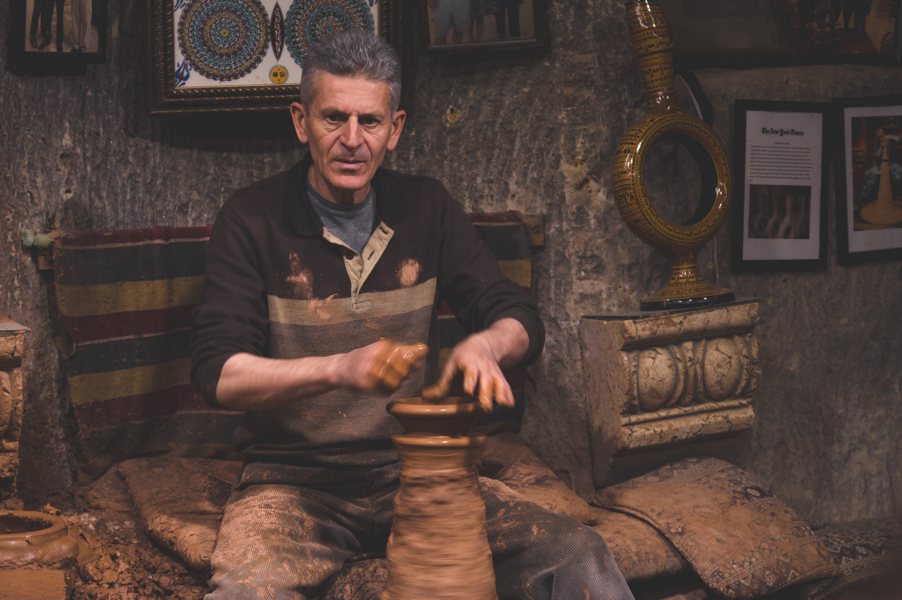
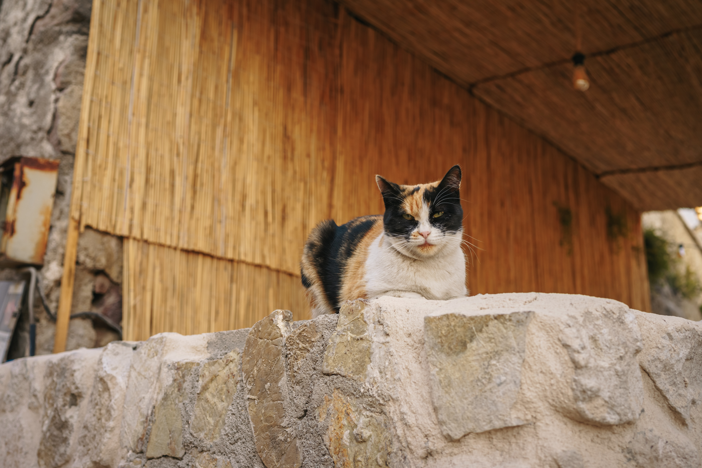
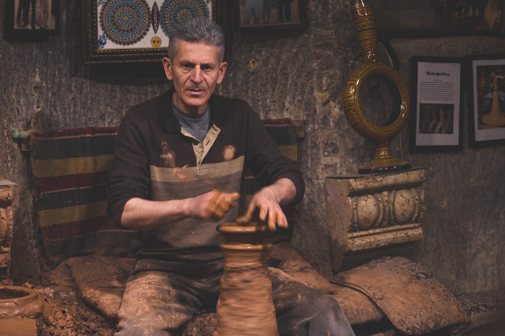
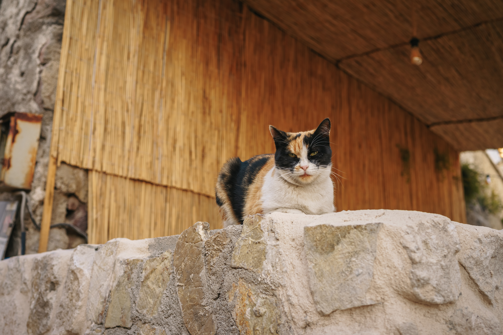

Above the sky
Meet the first sun rays of the day at the altitude of 800 meters enjoying spectacular view of the valey. Flying air balloon in Cappadocia is the lifetime experience. It depends on the weather a lot, so stay here at least for 3-4 days to get your flight and admire ballon show during the breakfast at your hotel.


 


